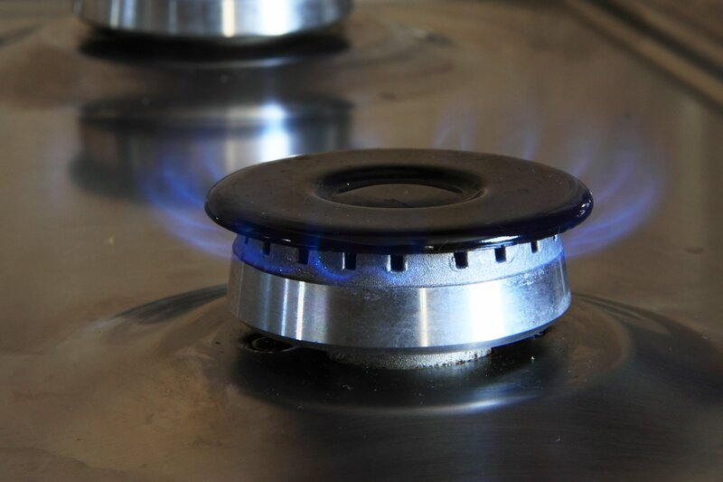

En este apartado del recurso vamos a ver:
- La energía de los alimentos. ¿De dónde proviene la energía de los seres humanos? Está claro que la procedencia está en los alimentos. Emulando a los científicos y científicas vamos a experimentar con los alimentos y calcular sus valores energéticos, realizando un informe y debatiendo sobre los resultados obtenidos.
- El uso doméstico del calor. Utilizamos energía solar térmica para calentar el agua caliente de nuestras casas. Pero, ¿sabemos cuánta agua caliente gastamos? ¿Cuánta energía necesitamos para calentar esa agua? Vamos a investigarlo y a debatir sobre la eficacia de la energía solar para calentar agua.
- Yincana del calor. Comprobamos nuestros conocimientos sobre la energía térmica en la yincana del calor. Nos encontramos tres niveles: el nivel de la pruebas numéricas del calor, el nivel de los conceptos del calor y el nivel digital del calor. Gana el grupo que menos tarde y más pruebas supere.